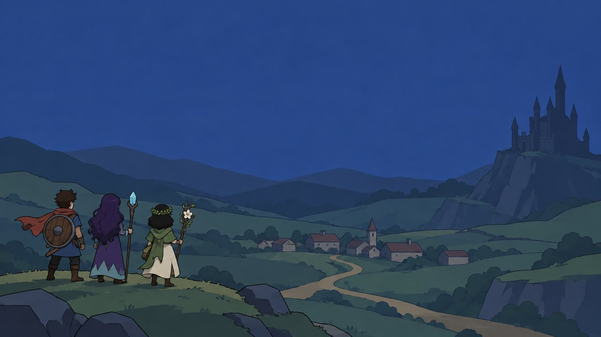

Cristais de Lumen
Acenda os cristais e traga a luz de volta ao reino.
▶ Jogar agoraFunciona no computador e no tablet. A primeira abertura demora um pouco: o jogo é grande.

Seus jogos salvos
Ficam guardados neste aparelho e neste navegador. Baixe uma cópia para não perder nada.
Como jogar
No computador: setas e Enter, ou o mouse.
No tablet ou celular: toque na tela. Deite o aparelho para jogar.
Trocar de aparelho: baixe a cópia aqui, mande o arquivo para o outro aparelho e use “Carregar cópia”.
Modo anônimo não guarda o jogo: use o navegador normal.